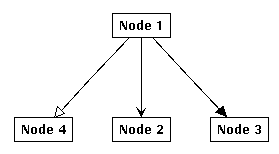
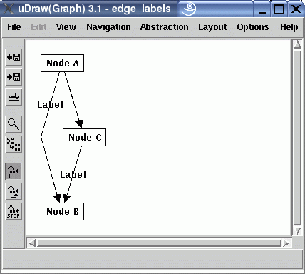

New features in uDraw(Graph) 3.1
This page covers new features and modifications in uDraw(Graph) 3.1, compared to the previous release 3.0.
-
New arrow head

There is a new value "oarrow" for the edge attribute HEAD. In the above example you can see three edges with the values "arrow", "oarrow" and "farrow" for the attribute HEAD.
-
Text of unselected edges in black instead of grey

Edge labels are displayed in grey for all edges. Only if the user selects an edge, the edge label is displayed in black. If edge labels are very important for the graph, this can be a problem, because the labels are very hard to see. Therefore it is possible now to display all edge labels in black by setting an option in Options/Layout Settings... or with the API command set(edge_text_black(boolean)). Setting this option can lead to an unreadable layout of the graph, because edge texts can cross nodes and other edges or other edge texts.
-
Updated Tcl/Tk version to 8.4.9
The version of Tcl/Tk compiled into uDraw(Graph) has been updated to version 8.4.9. This should be no problem for normal users. Only applications that are using the Tcl/Tk interface may have to be updated as well. Starting with release 3.1.1 we have upgraded from Img 1.2.4 to tkImg 1.3 and from BWidget 1.2.1 to 1.7.